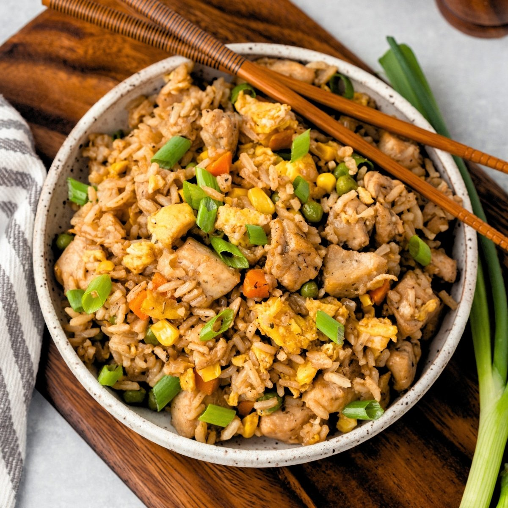

Ricky's Fried Rice

Ingredients
- Rice
- Olive oil
- Eggs
- Ground black pepper
- Green onions, chopped
- Onions, chopped
- Garlic, minced
- Ginger root, minced
- Sesame seeds
- Peas
- Carrots
- Green beans
- Peanut butter
- Soy sauce
- Chicken or shrimp or both
Directions
- Start by steaming the desired amount of rice.
- On a flat griddle, pour some olive oil.
- Pre-scramble the eggs.
- Cook the eggs and add black pepper.
- Transfer the eggs to a large container.
- Fry the chopped green onions.
- Transfer the green onions to the large container.
- Fry chopped onions.
- Transfer the onions to the large container.
- Fry finely chopped garlic, finely chopped ginger root, and sesame seeds.
- Transfer the veggies to the large container.
- Fry frozen peas, carrots, and green beans.
- Transfer to container.
- Ricky's secret sauceTM: Blend peanut butter and soy sauce in a mini-blender container.
- Fry the steam rice with olive oil.
- After the rice becomes loose, add Ricky's secret sauceTM:
- Add regular soy sauce, the rice should be a nice light brown color.
- Fry chicken, shrimp, meat, or a combination of them as the meat in the rice.
- Mix all the ingredients in single large container.
- Serve warm and enjoy!